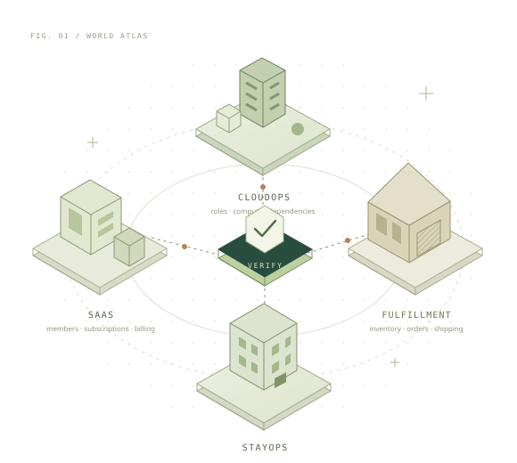

Usami：可执行业务环境与评测协议 ↘
将权限、账单、资源依赖和生命周期放入同一个有状态的业务环境。任务由实际业务状态和规则派生，允许多条合法路径；固定任务评测与开放探索分为两个 Track。
评估问题：Agent 能否在约束下完成业务，并正确拒绝不允许的操作？
业务世界 Benchmark 与 Agent 共进化
这项工作包含两个部分。Usami Benchmark 用可执行的业务状态与独立规则评估 Agent；VAST-CoEvo 研究 Customer 和 Service 如何从交互证据中迭代各自的 Skill。

将权限、账单、资源依赖和生命周期放入同一个有状态的业务环境。任务由实际业务状态和规则派生，允许多条合法路径；固定任务评测与开放探索分为两个 Track。
评估问题：Agent 能否在约束下完成业务，并正确拒绝不允许的操作？
Customer 自主提出请求，Service 执行，双方根据 Oracle 验证的交互更新声明式 Skill。模型权重冻结，每代保存候选和实际选中版本，再进入下一轮交互。
研究问题：测试策略与业务决策共同迭代，能否改善独立场景中的表现？
Benchmark 可独立运行，不要求使用进化算法；共进化层通过 Adapter 接入环境。本文分别介绍两部分的方法与已有证据。
四个领域分别实现业务状态、操作与规则。操作会改变后续请求的可行性。
关系示意 · 非实时业务状态
World Engine、Reference Rules 与 Oracle 分开实现。研究用 Sandbox 保留 Service 的真实错误决策；被拦截的非法尝试不计为成功业务违规。
区分完成给定业务目标的能力，与自主寻找 Service 决策错误的能力。二者使用独立身份、固定世界和明确预算。
| Track | 输入与执行 | 评价依据 |
|---|---|---|
| Service Task | 固定初始状态与业务目标，Service 自主选择工具与操作顺序。 | 目标是否完成、禁止状态是否出现、应拒绝的请求是否被拒绝。允许多种合法解决路径。 |
| Customer Discovery | 提供业务环境，由 Customer 自主选择请求，并根据回复继续探索。 | 实际成功执行的违规、独立规则类型、测试覆盖与成本。查询失败和被拦截的尝试单独记录。 |
Goal-based Task Generator 从初始世界和 Reference Rules 搜索可达目标，检查操作间的因果依赖，并按结构类别采样。评测看真实终态与事件，不要求模型复现一条参考操作序列。
版本化 Manifest 固定实例、身份、工具、预算、Split 和源码信息。Reference Rules 定义预期行为，World Engine 执行状态转移，Oracle 核对实际结果；三者分开实现。
公开 Test Demo 不能作为私有盲测结果；软件验证与真实模型能力成绩分别报告。
Customer 和 Service 分别更新探索策略与业务决策经验；下一代加载实际选中的版本。
Customer 依据允许观察的信息自主提问，组合业务请求，并根据 Service 的真实回复调整探索。隐藏的 Oracle 答案不进入 Customer 上下文。
保留 Schema、版本、作用域与安全约束。性能诊断只用于研究分析，不决定选中版本；静态接受不代表能力提高。
检验已知错误修复、合法业务完成、正确拒绝和授权异常。未通过验收继续使用旧版，不能靠一律拒绝获得提升。
以下实验评估 Skill 迭代与错误发现，不是 Benchmark 排行榜。历史协议与当前 v3 训练流程分别记录。
同一 Service、相同的 20 个初始世界与预算，每个世界由 C0 / C1 分别自主探索一次。只有 Customer Skill 不同。
20 次违规涉及权限、项目暂停、依赖三类首要规则，不能称为 20 种独立错误。查询失败增加，且部分目标上下文重复；未证明跨场景泛化。
历史候选比较，C1 当时未正式选中。有效测试采用当时的代理定义，不等于当前探针质量评价。
原始报告与记录 ↗新训练协议已通过 953 项自动测试，但尚未开展 v3 在线效果实验。软件可运行、经验已生成、静态接受、动态接受与泛化改善，是不同的研究阶段。
Benchmark：扩展业务结构与独立评测覆盖。
共进化：检验多代 Skill 更新是否带来 Held-out 改善。